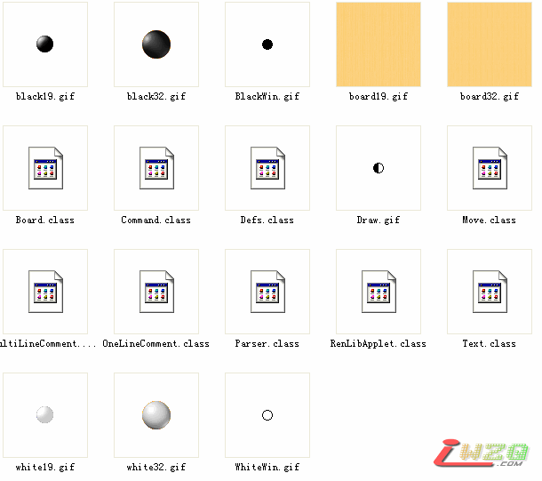

renlib的applet文件
首页
五子棋软件
#1 renlib的applet文件 作者：有志青年 发表时间：2007-4-18 21:07:28

此文件在网上提供的renlib打谱软件中默认不提供的，对五子棋网站的站长有用，其余爱好者用不到。
 applet.rar
applet.rar
#2 Re:renlib的applet文件 作者：小丸.net 发表时间：2007-4-18 21:52:16
有些资源是软件开发必备 的
#3 Re:renlib的applet文件 作者：无天 发表时间：2007-4-19 8:02:34
非常感谢!